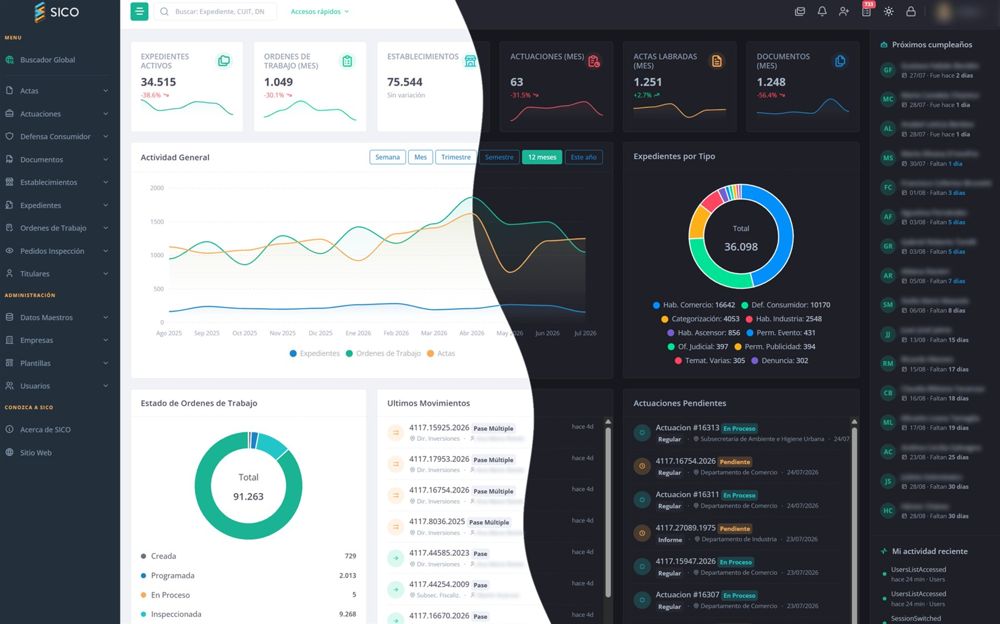

Toda la gestión municipal en una sola plataforma
Expedientes, actas de inspección, actuaciones, documentos y establecimientos — integrados, seguros y disponibles 24/7, con app móvil nativa para inspecciones en la calle.

10 módulos que trabajan juntos
Cada área municipal en su lugar, conectada con el resto. Sin planillas sueltas ni sistemas que no se hablan entre sí.
Expedientes
El corazón de SICO. Seguimiento completo del ciclo de vida de cada expediente, con pases, plazos y trazabilidad total.
Actas de inspección
Comprobaciones, infracciones, intimaciones y clausuras, labradas en el momento y vinculadas al expediente.
Actuaciones
Otorgá plazos a contribuyentes y controlá vencimientos con alertas y notificaciones automáticas.
Documentos
PDF, imágenes y archivos Office en un repositorio único, con visualización en línea y búsqueda avanzada.
Órdenes de trabajo
Asigná inspectores, seguí el estado de cada orden y vinculala con sus actas de inspección.
Profesionales
Registro unificado de gestores, ingenieros y arquitectos, con especialidades y control de duplicados.
Establecimientos
Comercios e industrias con propietarios, rubros, direcciones y CUIT, siempre actualizados.
Pases
Historial cronológico de cada movimiento del expediente entre áreas, con trazabilidad total.
Defensa del Consumidor
Denuncias, audiencias y resoluciones de defensa del consumidor, gestionadas de punta a punta y con estadísticas.
SICO Mobile
Inspecciones en la calle, con o sin señal. Sincroniza al volver.
Diseñado para el día a día
Del ingreso a la resolución, sin perder el hilo
Seguí cada expediente en tiempo real: en qué área está, cuánto lleva, quién lo tiene y qué falta. Los plazos se controlan solos.
- Trazabilidad completa de pases y movimientos
- Alertas de vencimiento automáticas
- Búsqueda global por CUIT, número o titular
La inspección se hace donde pasa
El inspector labra el acta en el lugar, con fotos y firma, aunque no haya señal. Cuando vuelve la conexión, todo se sincroniza con la oficina.
- Funciona offline y sincroniza solo
- Fotos y geolocalización en el acta
- App nativa para Android e iOS
Pensado para el trabajo municipal real
No es un software genérico adaptado: nació para la operatoria de un municipio.
Seguro por diseño
Roles, permisos y auditoría de cada acción. Sabés quién hizo qué y cuándo.
Todo integrado
Los módulos comparten datos, no los duplican. Una sola fuente de verdad.
Rápido de adoptar
Interfaz clara y consistente; el equipo lo usa desde el día uno.
100% online
Desde cualquier lugar y dispositivo, sin instalar nada.
Disponible 24/7
Infraestructura pensada para no frenar la gestión.
Web + móvil
La oficina en el navegador, la calle en el celular. Mismo sistema.
Lo que suelen consultarnos
¿Hay que instalar algo?
¿Funciona sin conexión en la calle?
¿Se puede empezar por algunos módulos?
¿Cómo se protege la información?
¿Genera documentos con código QR?
¿Está disponible en otros idiomas?
Solicitá una demostración
Te mostramos SICO funcionando con la operatoria real de tu municipio.
Hablemos por WhatsApp
La forma más rápida de coordinar una demo. Escribinos y te respondemos a la brevedad.
Escribir por WhatsApp